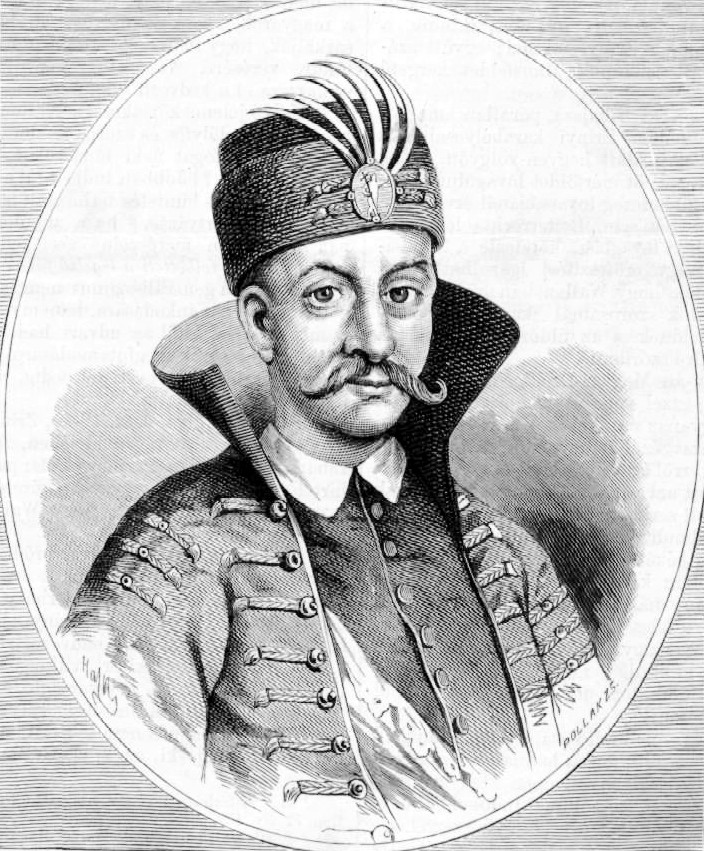

Zrínyi Miklós Családja

Zrínyi György
Apja
Szécsi Mária
Anyja
Zrínyi Ádám
Fia

Somogy vármegyék örökös főispánja
Főlovászmester, Királyi tanácsos
Légrádi főkapitány, Nagybirtokos főnemes
Költő, Hadvezér
Politikus, Hadvezér
Horvát eredetű főnemesi családban született, dédapja Zrínyi Miklós, a szigetvári hős volt. Apja, Zrínyi György Habsburg-párti főnemes, horvát bán, anyja Széchy Magdolna volt.
Hazatérése után, a családi hagyományoknak megfelelően, birtoka védelmében állandó harcokat folytatott a törökök ellen, kiverte őket a Muraközből és védte Magyarországot, Erdélyt, Karintiát, Stájerországot. A családi birtokot megosztotta öccsével, Zrínyi Péterrel: ő maga a Muraközben maradt, öccse a tengermelléki földeket kapta. A nyelvi környezet különbözősége meghatározó lett: Miklós magyar, Péter pedig horvát nyelvű költővé vált. Az 1642–45 közötti időszakban bekapcsolódott a harmincéves háborúba.
Elsősorban politikusnak tartotta magát, és csak mellékesen költőnek. Ennek ellenére a 17. századi magyar barokk irodalom legkiemelkedőbb alakja: írói-költői munkássága a legnemesebb értelemben vett nemzetszolgálat. Kora ifjúkorától fogva írt verseket. Fő művén, a 15 énekből álló Szigeti veszedelem című hősi eposzon 1645-től dolgozott. Ebben dédapjának, Szigetvár vértanú védőjének állított emléket.


A közvéleményt megrázta a halálhír. Jellemző, hogy sokan nem tudták elfogadni a baleset tényét: összeesküvésről, udvari merényletről beszéltek. A halálesetről a legrészletesebb beszámolót a vadászaton részt vevő Bethlen Miklós adta több levelében.
Mai nap alkalmával Zrínyi Miklós a mindennapi vadászatról nem tért vissza, részvétünket nyilvánítjuk családja részére.
+36 20/1620-05-03
ok-zrinyimiklos@freemail.hu